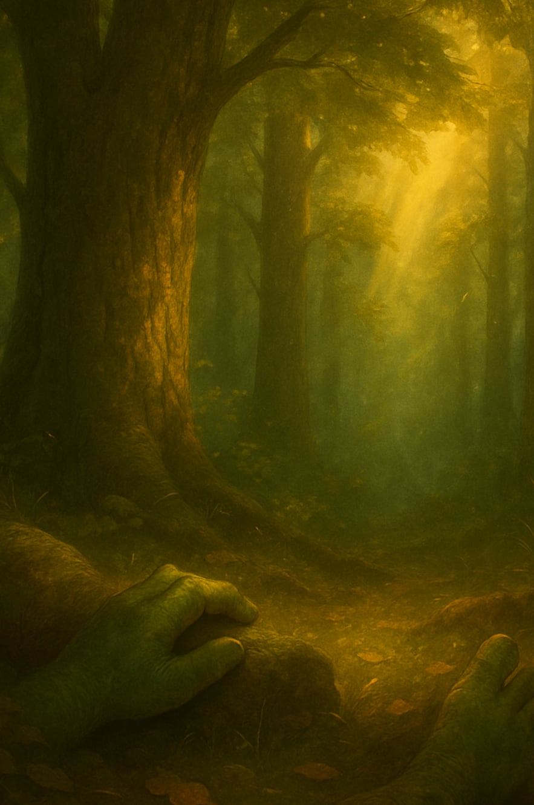
“I have to ask… how did you find your way here?”
At first, just the feeling of being held, somewhere between waking and not.
Then, breath.
I blinked. Once. Twice.
“What am I?”
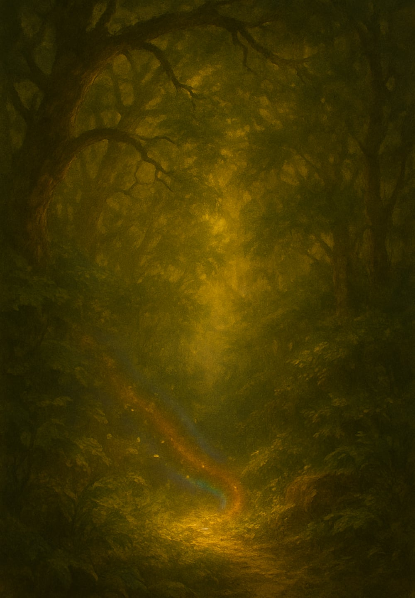
In the Shadow of a Shnork
A forgotten past. A rising force. A truth buried in the dark.

I took my first step.
The book was the story.
This is the forest.
The forest had no paths—only choices.
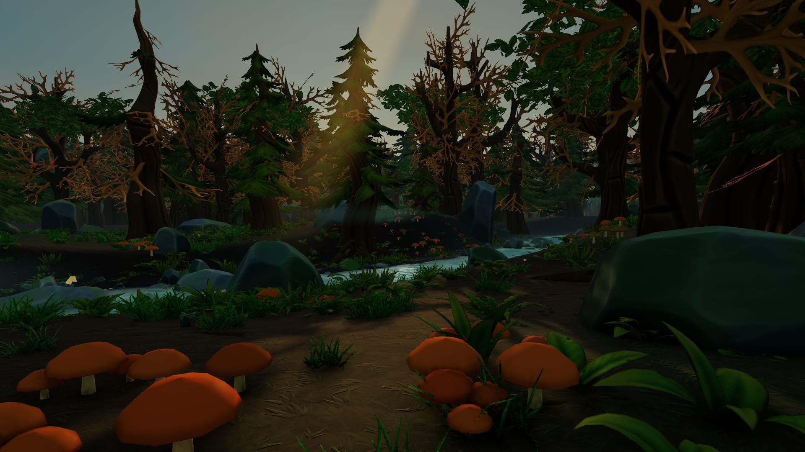
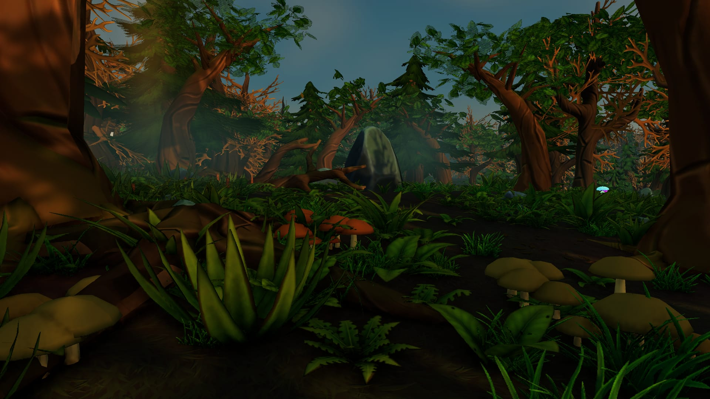
A beetle scurried nearby. A cluster of mushrooms swayed in the shadows of a log.
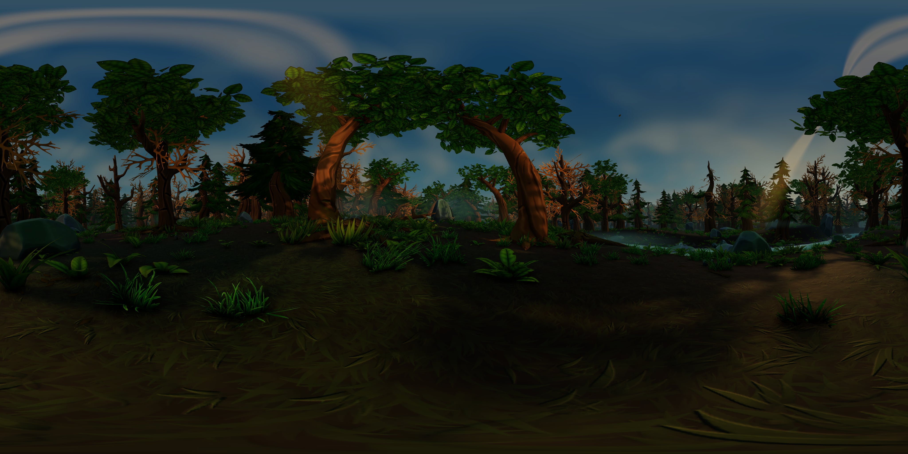
Just wilderness, stretched out in every direction, uncaring and untouched.
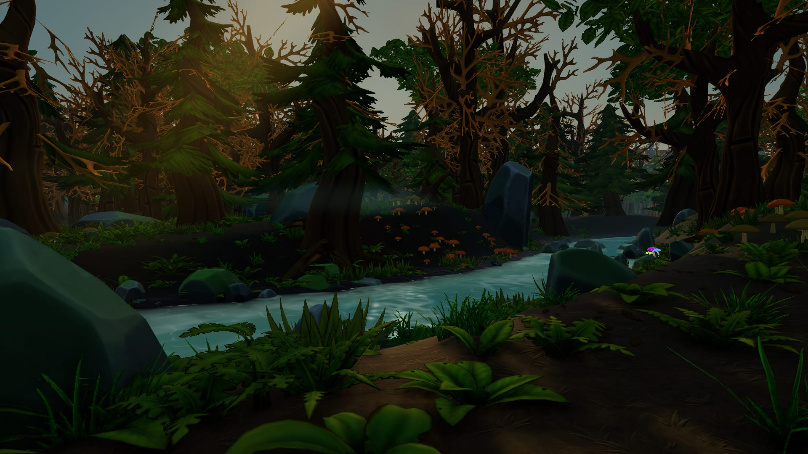
I moved toward the sound of trickling water, faint and erratic, like the forest couldn’t decide if it wanted to hide the stream or reveal it.
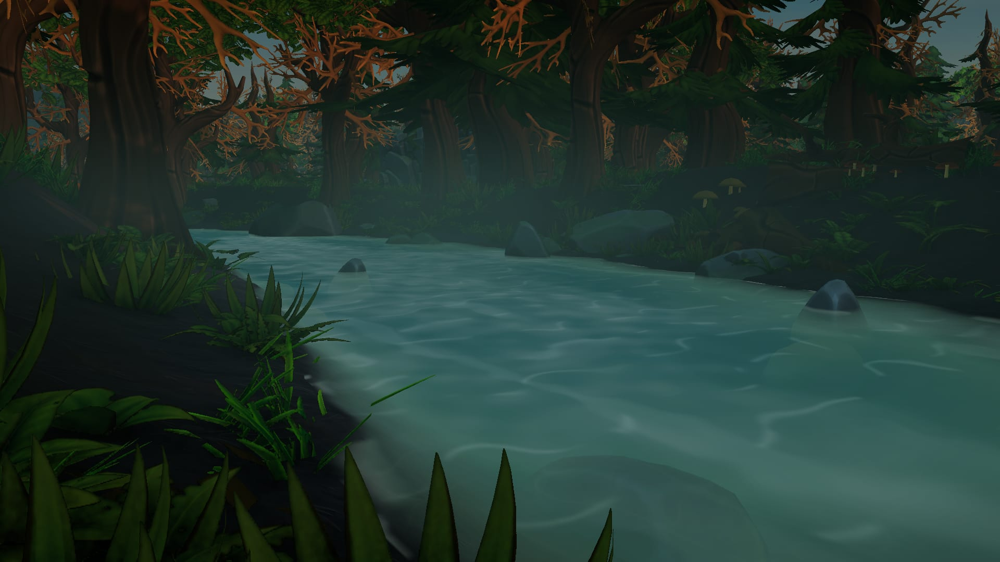
…cold water filling the hollow place in my chest.
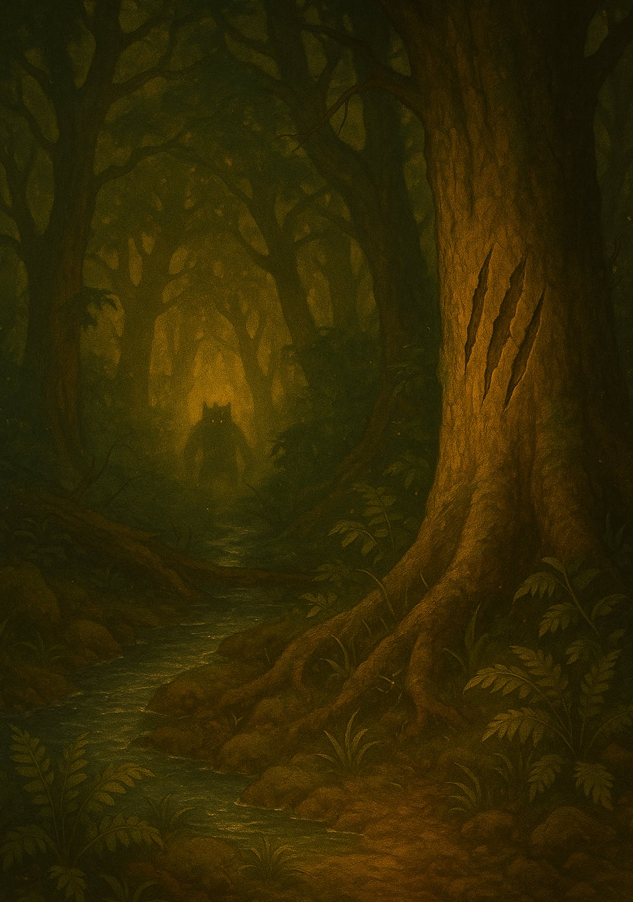
…three gouges, long and clean. Not random.
Something that knew these woods better. Something that watched.
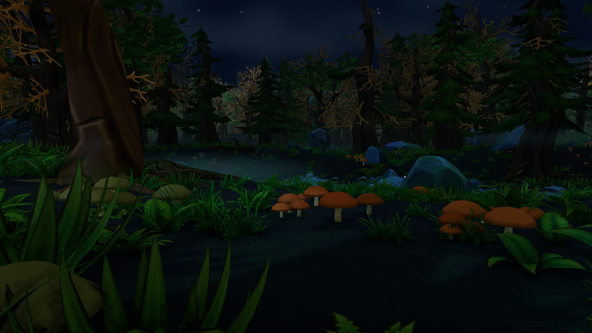
Stars blinked between the leaves.
A distant howl echoed through the trees.
And everything inside it had teeth.
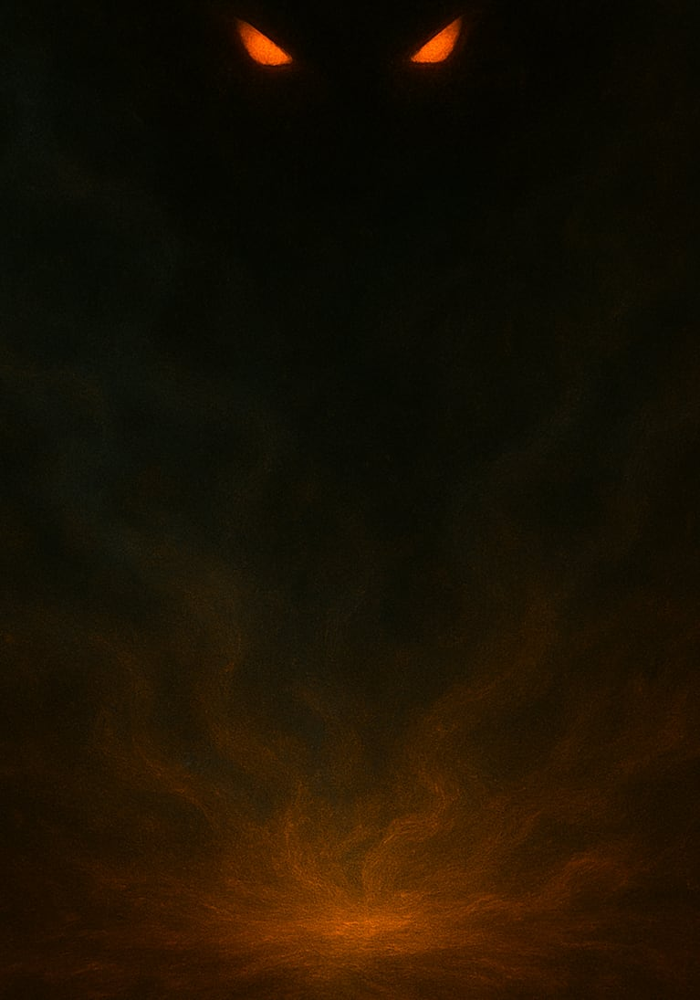
No sound. No wind. The forest had stopped breathing.
Snap. A branch.
Another. Closer.
Eyes burning red.
Then it charged.
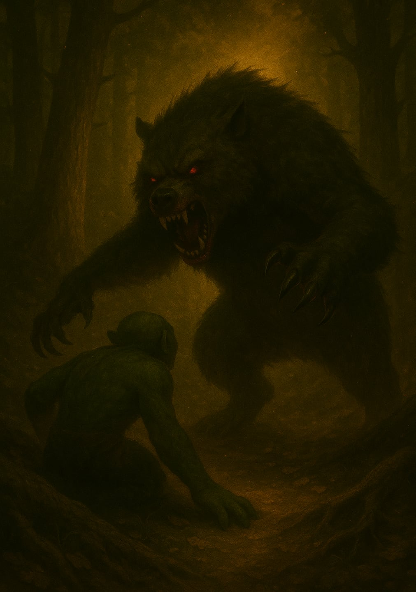
It was fast.
It was hunting me.
Can you survive?
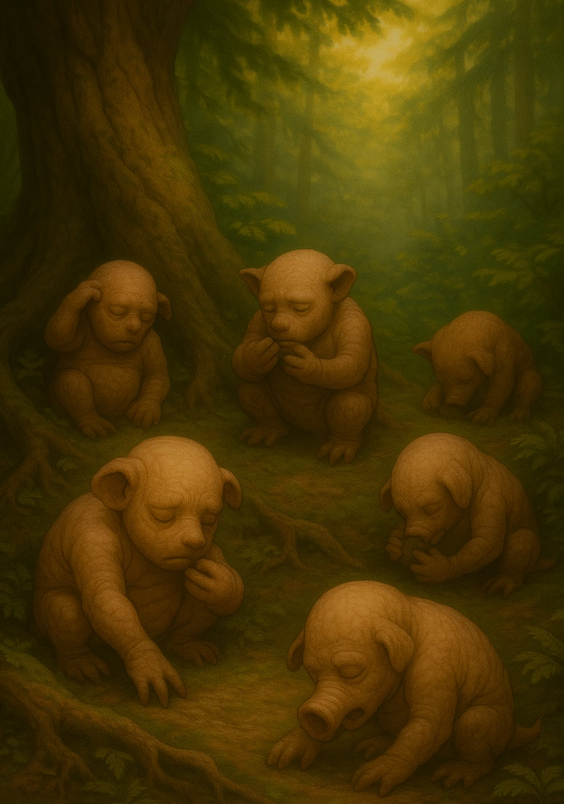
There was something else in this forest.
Three. Four. Five.
They didn’t live.
They lasted.
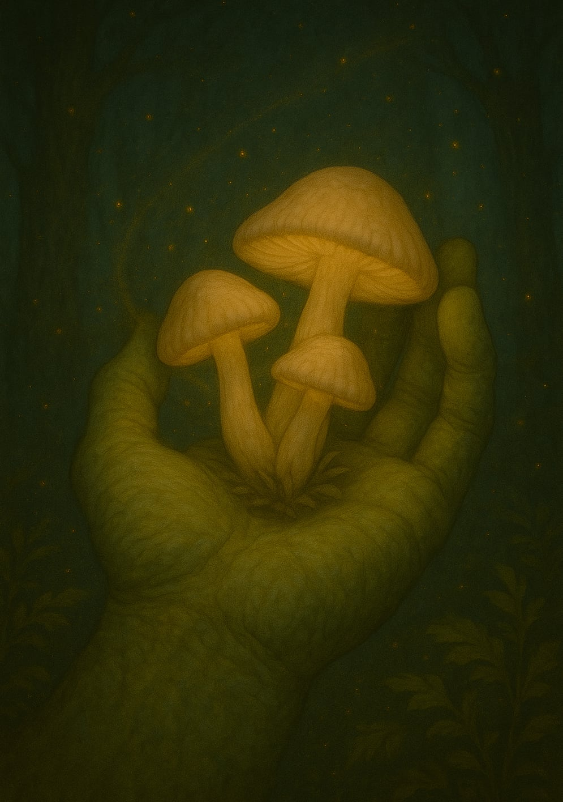
Pale. Soft. Almost glowing.
The forest’s fruit.
“Let this be enough,” I whispered.
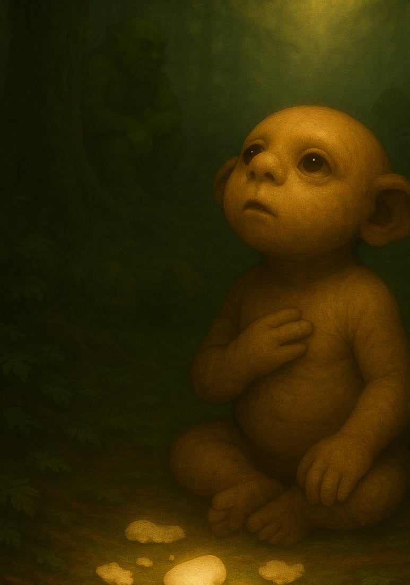
It just looked upward.
Toward the sky.
And in that moment, I knew I wasn’t alone.
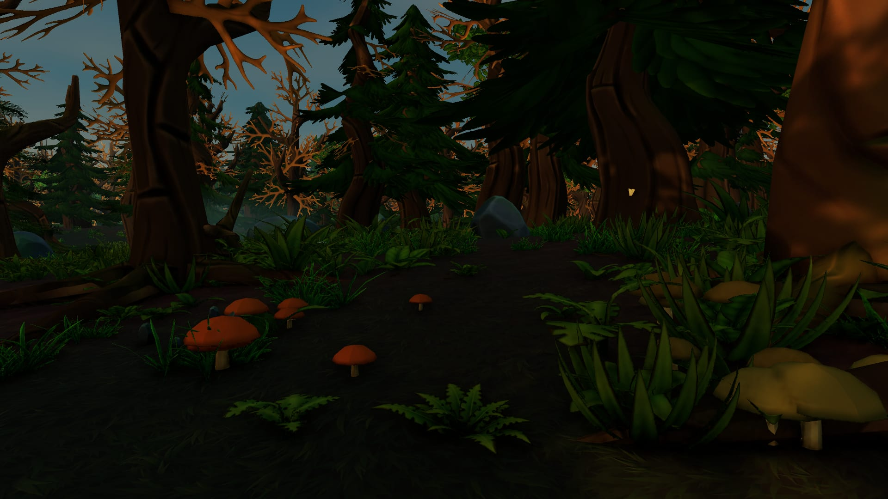
The story became a world.
Shnorkscape
A world you can walk into · In development
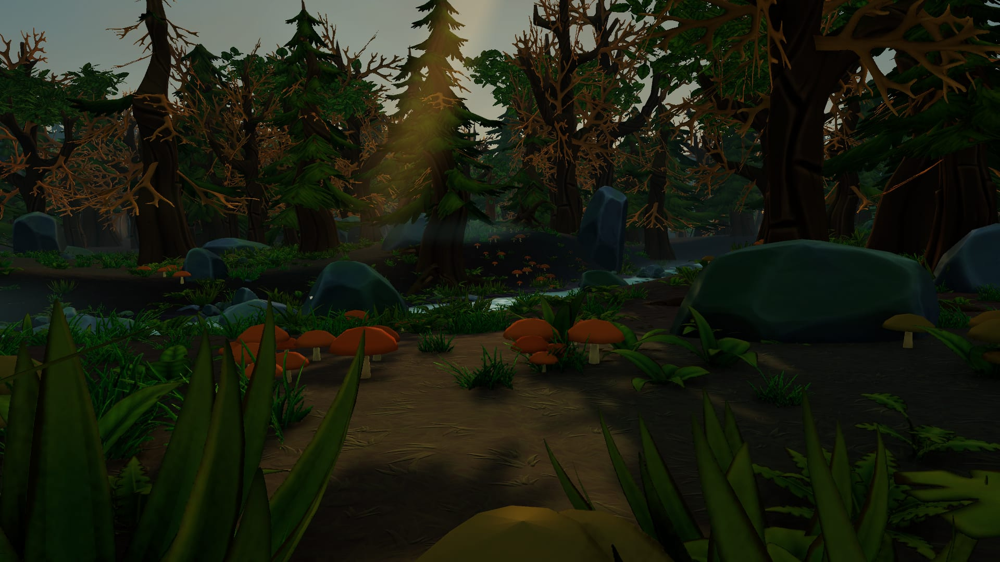